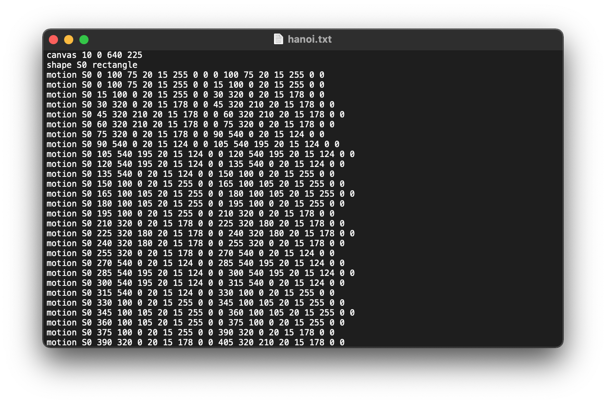
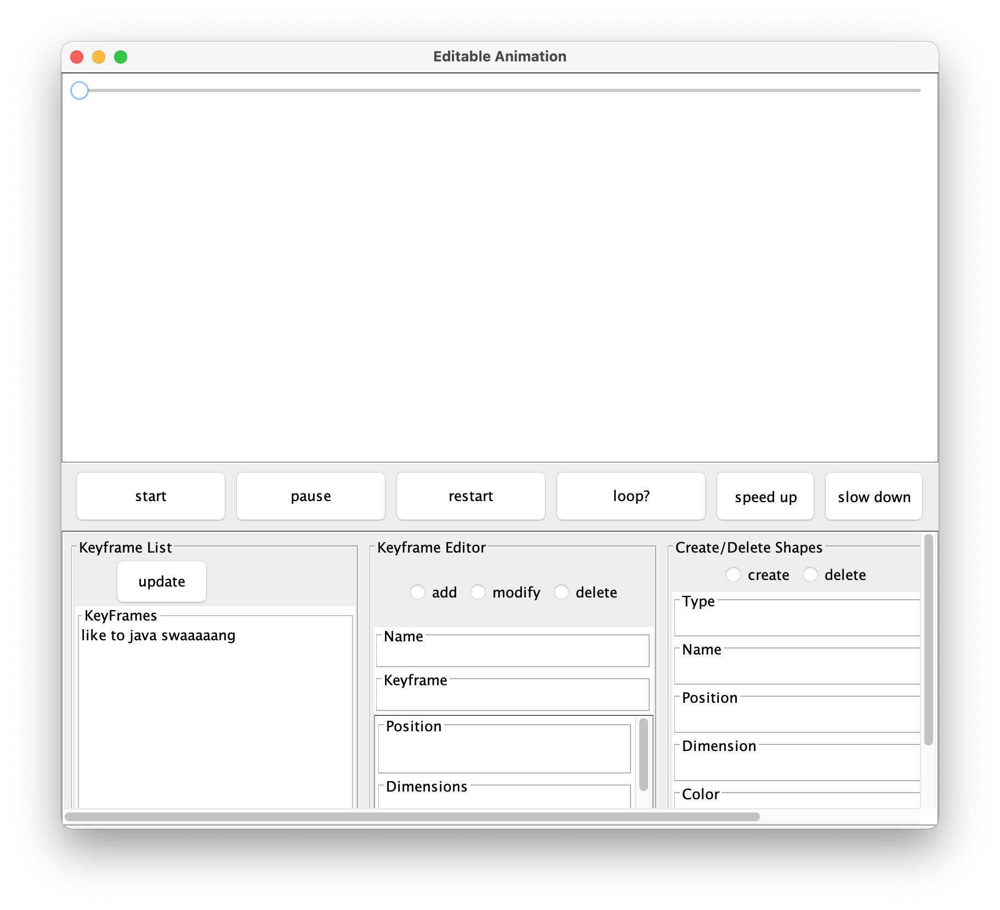
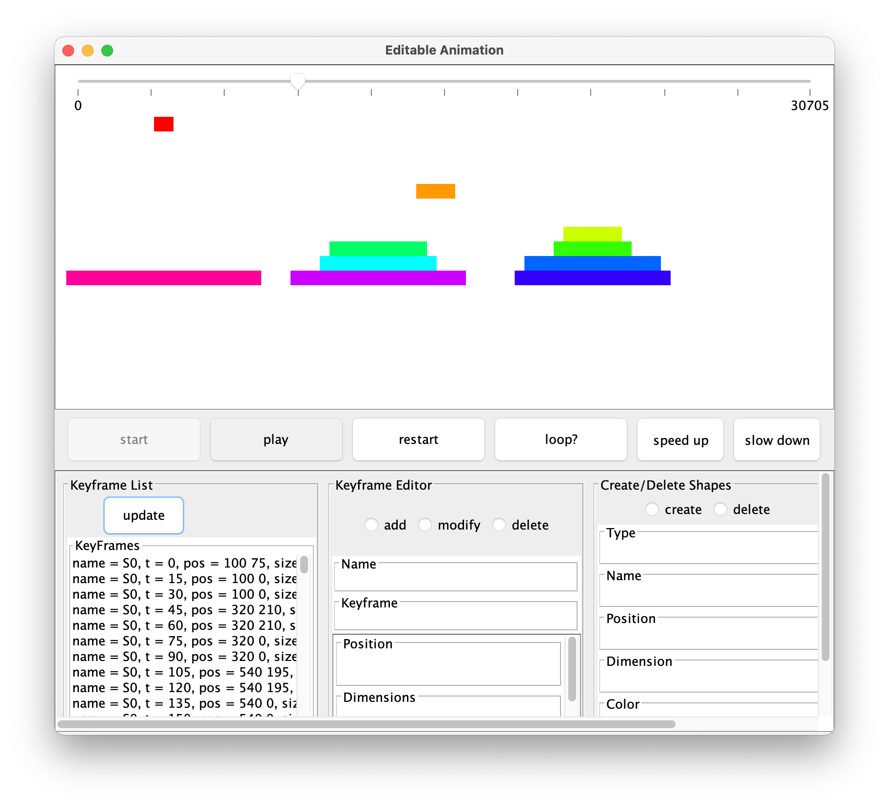
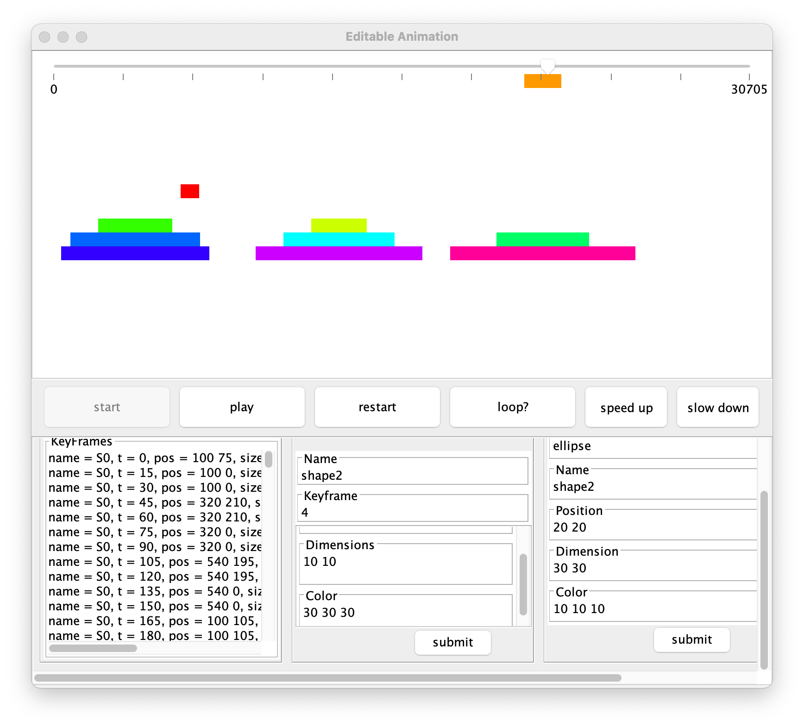

An animator GUI built with a partner for an 'Object-Oriented Design' course assignment. Using design patterns such as Visitor and MVC, we created an attractive and functional animation viewer/editor.




Our program took in an input file such as the one photographed above, and built animation objects according to our model. Our controller handled the data from the model to create three types of views: a simple textual format of our animation, an SVG script, and a visual animation. The editing dashboard corresponding to our animator is pictured above. Our GUI had capabilities to scrub through the animation, play/pause/restart, add shapes simultaneously, and more.